Inhalt Index DeskTop Bronstein

 Computeralgebrasysteme Anwendungen von Computeralgebrasystemen Lösung von Gleichungen und Gleichungssystemen Mathematica
Computeralgebrasysteme Anwendungen von Computeralgebrasystemen Lösung von Gleichungen und Gleichungssystemen Mathematica


Mathematica stellt die Anweisung 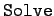 für die Lösung von Gleichungen zur Verfügung. In gewissem Sinne führt nacheinander die Operationen 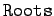 und  durch.
durch.
Mathematica ist nur in der Lage, Gleichungen symbolisch zu lösen, wenn dies in Form algebraischer Ausdrücke überhaupt möglich ist, d.h. höchstens Gleichungen vierten Grades. Wenn jedoch Gleichungen höheren Grades durch algebraische Manipulationen wie Faktorisierung in einfachere algebraische Ausdrücke umgeformt werden können, dann ist Mathematica auch hier in der Lage, Lösungen zu bieten. versucht in solchen Fällen, mit den eingebauten Operationen 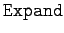 und entsprechende Zerlegungen vorzunehmen.
Prinzipiell kann Mathematica unter bestimmten Voraussetzungen numerische Lösungen anbieten.
| Beispiel |
|
Allgemeine Lösung einer Gleichung dritten Grades: 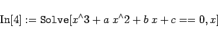
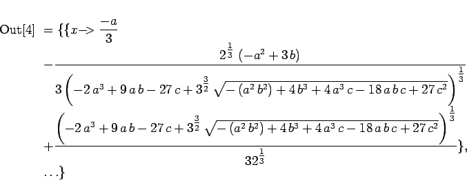
|
| Beispiel A |
|
Für die kubische Gleichung x3+6x+2=0 wird: |
| 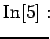 | = | 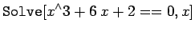 | |
| 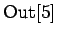 | = | 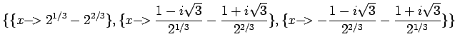 |
| Beispiel B |
|
Lösung einer Gleichung 6. Grades: |
| 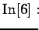 | = | 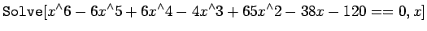 | |
| 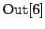 | = | 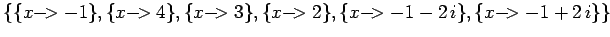 |
Mathematica ist es gelungen, die Gleichung in Beispiel B mit internen Mitteln zu faktorisieren; danach wird sie problemlos gelöst.
Wenn es um numerische Lösungen geht, sollte man von vornherein die Anweisung 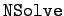 benutzen; sie ist meist schneller.
| Beispiel |
|
Die folgende komplizierte Gleichung löst man mit : |
| 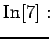 | = | 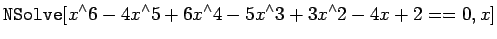 | |
| 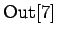 | = | 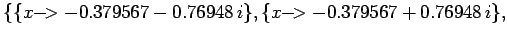 | |
| 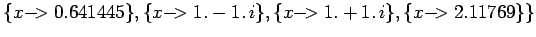 |